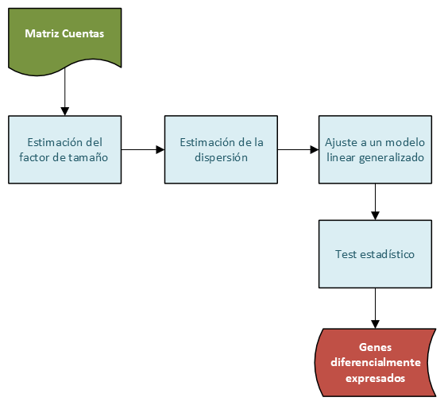

Análisis de expresión diferencial
Podría decirse que el uso más comun de los datos de transcriptoma es la busqueda de genes expresados diferencialmente. Encontrar que genes se expresan diferencialmente entre diferentes condiciones es una parte integral en la comprensión de las bases moleculares de la variación fenotípica.
Un gran número de métodos computacionales se han desarrollado para el análisis de expresión diferencial que difieren ligeramente en su métodología.
DESeq2
DESeq2 (Differential gene expression analysis based on the negative binomial distribution) es un paquete de bioconductor ampliamente utilizado en este tipos de análisis.
El punto de partida en el análisis en las matriz de cuentas, siendo el objetivo identificar los genes que estan diferencialmente expresados entre las muestras.

DESeq2 comienza estimando los factores de escala, a continuación estima la dispersión de los genes. Por ultimo, DESeq2 ajusta un modelo linear generalizado y genera la lista de genes diferencialmente expresados.
Estimación del factor de tamaño.
DESeq2 actua sobre una matriz de cuentas (cuentas no normalizadas). Se supone que las cuentas reflejan la abundacia de genes, pero estas tambien dependen de otros factores como la longitud del gen, los sesgos de secuenciación o la composición de la biblioteca.
Longitud del gen

Como se observa en la figura el gen 1 y el 2 tienen similares niveles de expresión, pero muchas más lecturas se asignan al gen 2, esto podría no tener relación con la biología y podría reflejar unicamente el hecho de que el gen 2 es mas largo que el gen 1. Para el análisis de expresión diferencial, como los niveles de expresión se comparan entre muestras (y no los niveles de expresión entre los genes de una misma muestra), no es recomendable su uso para estimar el factor de tamaño.
Profundidad de secuenciación.
Los experimentos de secuenciación producen decenas de millones de lecturas. Una parte de las lecturas de secuenciación se descartaran durante los procesos de control de calidad, alineación y conteo, lo que implica que el número total de lecturas para cada muestra será diferente.

Como se muestra en la figura, todos los genes parecen ser expresados a un nivel mayor en la muestra 1 que en la muestra 2. Probablemente es debido a que la muestra 1 tiene muchas más lecturas que la muestra 2.
Composición de la librería

Imaginemos que una celula expresa unicamente 2 genes (gen 1 y gen 2) y asumamos que un tratamiento con un fármaco induce una fuerte expresión del gen 3. Si la normalización se realiza usando unicamente el número total de cuentas, entonces las cuentas del gen 1 se dividirían por 15 en las celulas control, mientras que serían divididas por 165 en las celulas tratadas, lo que nos llevaría a la conclusión erronea de que el tratamiento ha reducido 11 veces la expresión del gen 1. La composición de la libreria ha cambiado pero no el nivel de expresión del gen 1.
En un caso real, unos pocos genes expresados de forma muy diferencial, diferencias en el número de genes expresados entre muestras o la presencia de contaminantes pueden sesgar la composición de la librería.
El método de normalización de DESeq2
DESeq2 estima los factores de tamaño teniendo en cuentra el tamaño de la librería y su composicion, usando el método de la mediana de los ratios
- Paso 1: DESeq2 crea una muestra de pseudo-referencia calculando la média geométrica por cada gen.
- Paso 2: Por cada gen en cada muestra, se calcula la relación cuentas/pseudo-referencia.
- Paso 3: El valor de la mediana de todas los ratios calculados para una muestra es tomado como el factor de tamaño para esa muestra.
- Paso 4: Los valores normalizados se obtienen dividiendo los valores de las cuentas por el factor de tamaño correspondiente a cada muestra.
Modelo
Si observamos la distribucíon de cuentas de una muestra típica en RNA-seq: 
Es obvio que los datos no estan normalmente distribuidos, Los valores son valores enteros y siempre positivos (variable discreta). Podemos observar que hay una gran cantidad de genes con valores muy bajos o cero, y solo unos pocos genes con valores muy altos.
Los datos de cuentas de RNA-seq se ajustan mejor a una distribución binomial negativa. \[K_{ij} \sim NB(mean = µ_{ij}, dispersion = \alpha_i)\]
Estimación de la dispersión.
Estimar la dispersión para cada gen sería sencillo de tener muchas replicas para cada condicion, pero en este caso los experimentos suelen tener a menudo solo 3 replicas. DESeq2 asume que los genes con niveles similares de expresión tendran similar dispersión.
- Paso 1: La dispersión de cada gen es estimada por separado. Dado los valores de recuento de las replicas se calcula la dispersión más probable. Los genes con bajos recuentos tienen dispersiones mucho mayores que los genes con mayor nivel de expresión.
- Paso 2: Se ajusta una curva a la dispersión de genes. Los genes tendrán diferente variabilidad biológica, pero en todos los genes habrá una distribución de dispersión razonable.
- Paso 3: Reducción de las estimaciones de la dispersión de los genes hacia los valores predichos por la curva usando el método empírico de Bayes. La reducción de la dispersión es particularmente importante para reducir los falsos positivos en el análisis de expresión diferencial.
 .
.
Modelo linear generalizado.
DESeq2 ajusta un modelo linear generalizado de la forma: \[log2(q_{ij}) = \Sigma x_j.β_i\]
En el caso de un diseño simple con una condicion (un tratamiento por ejemplo), el modelo se puede escribir como: \[log2(q_{ij}) = \beta_0 + \beta_1.x_j + \epsilon\] _0$ es el log2 del nivel de expresion in las muestras control
\(\beta_1\) es el log2FC entre celulas tratadas y control
\(x_j\) = 0 si la muestra j es de tipo control
\(x_j\) = 1 si la muestra j es de tipo muestra tratada.
Hipótesis
La hipótesis nula \(H_0\) es que no hay expresión diferencial entre los grupos, lo que equivale a decir que log2FC = 0. La prueba de Wald determinará si los datos proporcionan suficiente evidencia para concluir que este valor es realmente diferente de cero.
Corrección de pruebas multiples
Un valor de p de 0.05 significa que sólo hay un 5% de posibilidades de obtener estos datos si no existe una diferencia real, es decir, hay un 5% de posibilidades de que se tome una decision equivocada (un falso positivo).
En un análisis de RNA-seq podríamos tener 20000 genes y solo una fracción de ellos se expresan de manera diferencial. Supongamos un tratamiento que modifica la expresión de 1000 genes.  El primer histograma de la figura muestra los valores de p para los genes verdaderamente modificados, el segundo histograma muestra la distribución de los valoras de p para los genes no modificados. Los valores se distribuyen uniformemente entre 0 y 1. Podemos ver que el 5% de estos genes parecen significativos, aunque es sólo por casualidad. De 19000 genes 950 falsos positivos. Por lo tanto los valores de la prueba de Wald deben de corregirse para evitar un exceso de falsos positivos. Por defecto DESeq2 usa el método de Benjamini-Hochberg para ajustar los valores de p.
El primer histograma de la figura muestra los valores de p para los genes verdaderamente modificados, el segundo histograma muestra la distribución de los valoras de p para los genes no modificados. Los valores se distribuyen uniformemente entre 0 y 1. Podemos ver que el 5% de estos genes parecen significativos, aunque es sólo por casualidad. De 19000 genes 950 falsos positivos. Por lo tanto los valores de la prueba de Wald deben de corregirse para evitar un exceso de falsos positivos. Por defecto DESeq2 usa el método de Benjamini-Hochberg para ajustar los valores de p.
Filtrado independiente
Los genes con muy pocas cuentas tipicamente son no significantes debido a su alta dispersión. Sin embargo estos genes influyen en la correción de pruebas multiples, mejorando la resolución si estos genes son eliminados. DESeq2 usa como criterio de filtrado la media de las cuentas normalizadas. Los genes con un valor de expresion media inferior a cierto umbral son eliminados. El umbral usado es definido automaticamente por el softeare. Se elige maximizando el número de genes que tendrían un valor de p ajustado significativo.
Referencias
Laurent Gatto and Axelle Loriot. UCLouvain-CBIO/WSBIM2122: Omics data analysis. https://github.com/UCLouvain-CBIO/WSBIM2122.
Harvard Chan Bioinformatics Core (HBC). https://hbctraining.github.io/DGE_workshop/